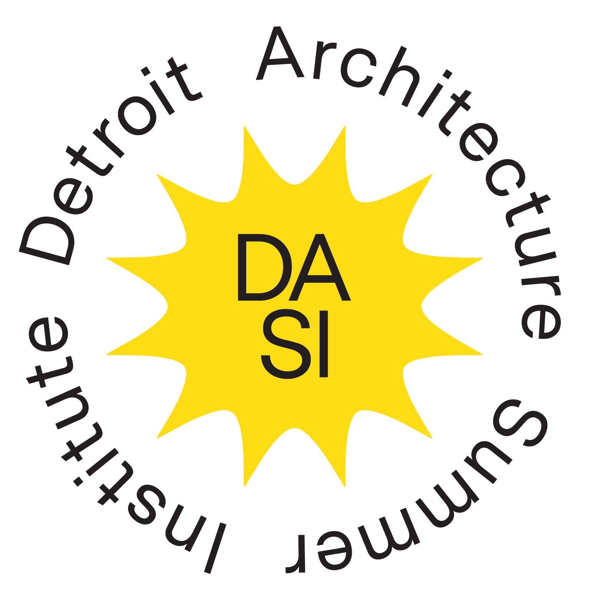

Detroit Architecture Summer Institute critically engages Detroit’s automotive, labor, and creative infrastructures through interdisciplinary architecture and spatial frameworks.
2026 Topic: Place-Based Storytelling & Independent Research Around Detroit’s Automotive, Labor, and Creative Infrastructures, Histories and Sites.
For our inaugural session, we will host an intensive four-day workshop for students, researchers, and practitioners at Wayne State University and across Detroit, Michigan.
The cohort will critically and creatively engage Detroit sites and landmarks, including the Walter P. Reuther Library Archives on Wayne State University’s campus. We will wander and study sites together, independently, and in smaller groups based on individual interests.
We will produce a collective document archiving our studies and time together. Participants will have opportunities to advance their own research and creative practices through workshops with cartoonist Lauren Weinstein, DASI 2026 artist-in-residence, and archivists at the Walter P. Reuther Library, Archives of Labor and Urban Affairs.
DASI supports longer stays by those who wish to research or make creative work after the intensive workshop.
Detroit is future-oriented. Detroit asks us to design expansively and collectively, to reimagine our goals for the built environment beyond discrete sites, moments, or constituents.
Detroit residents, scholars, and workers have long addressed, on behalf of our entire nation, questions about resiliency, ingenuity, automation, being human, creative expression, social mobility, mutuality, and post-industrial realities.
DASI works to advance not only architectural and interdisciplinary spatial thinking, but also mutuality and care in architecture and built environment practices. We are dedicated to transforming the ways we practice in community with others in advancing more holistic, participatory, open, and mutual infrastructures for architectural thinking and practice in Detroit and beyond.
Send your materials as a PDF document to the DASI 2026 organizer at gm4897@wayne.edu . The review process begins May 10, 2026 and is open until the cohort is full.
To be considered, please submit:
Laura Foxman
DASI 2026 Organizer / Assistant Professor of Design at Wayne State University
Laura is a Detroit-based interdisciplinary architect/artist whose practice centers on civic and cultural infrastructures that advance public life. She leads the research-based practice We Are All Collage (WAAC), which operates at the intersection of architecture, design, and information culture.
Lauren Weinstein
DASI 2026 Artist-in-Residence / Cartoonist and Artist
Lauren R. Weinstein is a cartoonist, animator, and visual artist whose work addresses adolescence, motherhood, and mortality. Her books include Girl Stories, Inside Vineyland, and Goddess of War, and her comics have been published in The New Yorker, Slate, The Paris Review, Bookforum, and The Guardian.
For questions, inquiries, and expressions of interest: